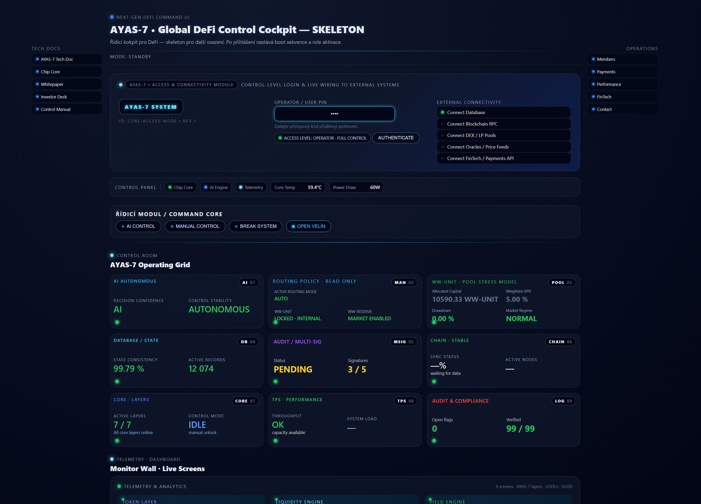
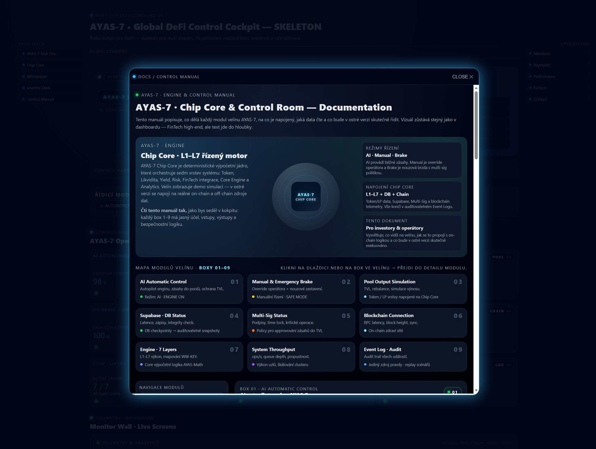
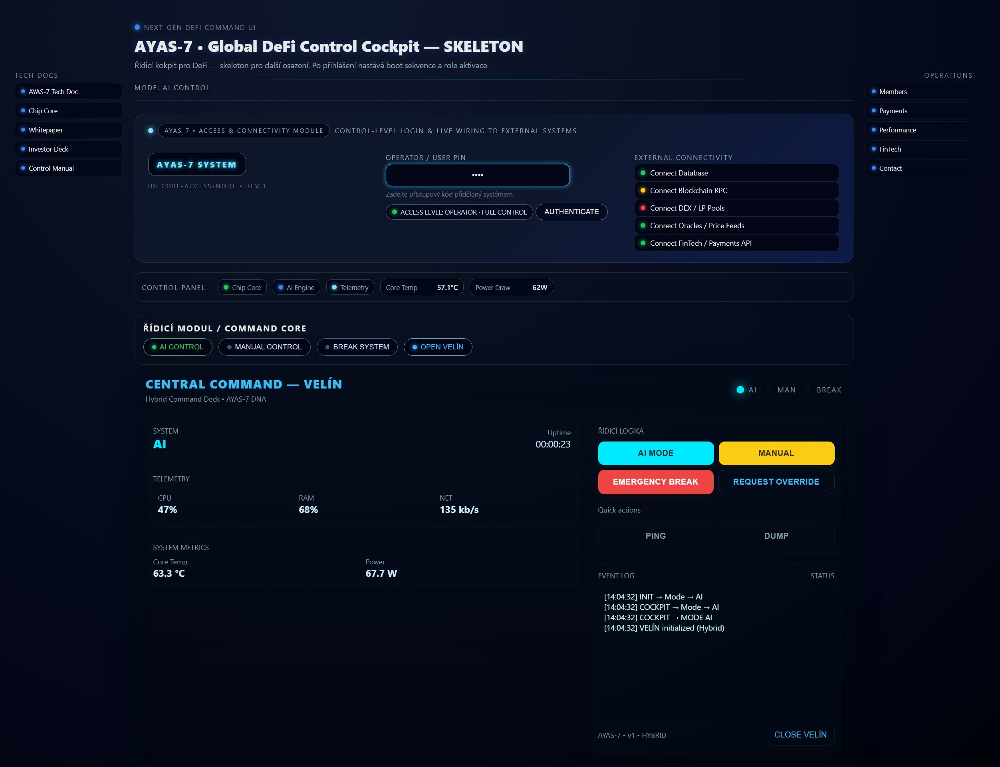
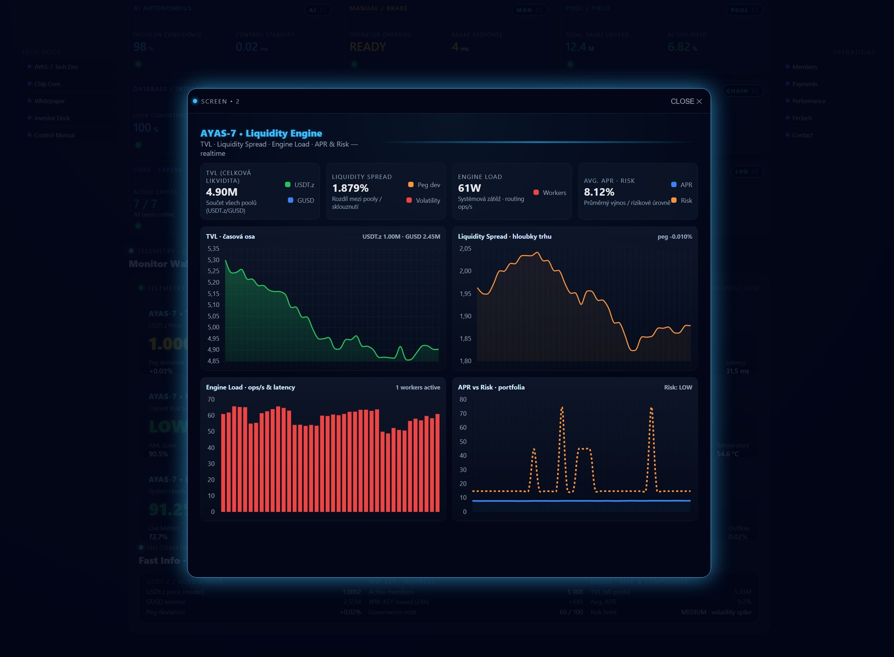

AYAS-7 Next Generation
Global DeFi Control Cockpit
AYAS-7 je profesionální softwarová řídicí deska pro správu DeFi ekosystémů, likvidity, poolů, tokenů a governance. Není to demo – je to skutečná architektura systému navržená jako jednotná „základní deska“ pro finanční infrastrukturu nové generace.

Co je AYAS-7
AYAS-7 spojuje lidskou rozhodovací logiku s výpočetní silou AI. Systém je navržen jako centrální řídicí deska, která propojuje on-chain data, databáze, externí API, finanční infrastrukturu a správu rizik.
Chip Core – výpočetní a rozhodovací jádro
AI řízení + manuální kontrola
Správa likvidity, poolů a tokenů
Telemetrie, monitoring, auditní stopa
Proč je výjimečný
AYAS-7 není webová stránka. Je to software navržený jako operační systém pro DeFi, připravený pro provoz jako samostatná aplikace (EXE), s možností dalšího rozšiřování modulů.
Jednotná architektura místo chaosu nástrojů
Připraveno pro multi-sig a governance
Transparentní vývoj na GitHubu
Skeleton & Web

AI / Manual Control

Liquidity Pools

Dashboard & Telemetry
